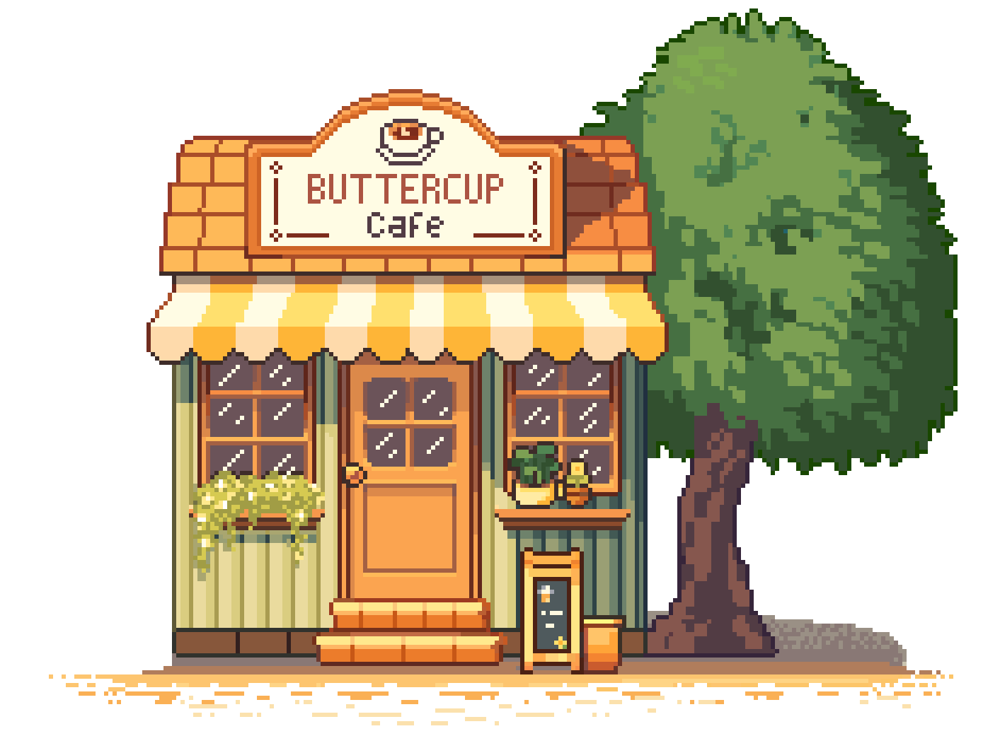
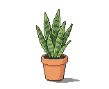
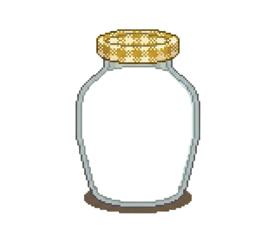

Hi !
I'm Dimah
Augmented realityHCIComputer graphics
Master's student @ Institut Polytechnique de Paris
Dimah
I'm an IT student who likes cute things, music, and coffee!|

have a seat
Q&A Jar !


Ask me anything !
Education
I'm a Master's student in IT with a focus on Computer Graphics and Human-Computer interactions. I love exploring how technology can create beautiful experiences, especially in AR settings.
Which university?
I'm studying at Institut Polytechnique de Paris!
Key skills?
I've developed skills in Unity 3D, C++, and JavaScript. And I learned a lot about usability and design throughout my studies.
Projects
I have lots of projects .. Check them out below !
Favorite project?
My favorite project is the AR Pathfinding system for Parkinson's patients. It was my personal research project where I got to see a real impact on patients who suffered from mobility issues. It was an example of how technology can make people's lives a bit better and it's what I would love to work on in the future.
Future plans?
I want to explore more AR/VR applications in healthcare and education. The potential to create accessible, helpful technology really motivates me!
Music
I love music .. what would you like to know ?
What instruments?
I play piano, guitar, and violin!
Favorite genres?
I love Heavy Metal and Electro.
Cats or dogs?
Definitely cats! 🐱
Do you have a cat?
Sadly not, I've never had one .. But I can't wait !
Why cats?
Cats are like elegant code - efficient, independent, and sometimes unpredictable! They respect your space but show affection on their own terms.
on the table
My Projects !
ISMAR Best Poster Award 2025
Adaptive Augmented Reality Pathfinding for Parkinson's Disease
- Unity 3D
- HCI
- Mixed Reality
AR system using Meta Quest 3 integrating dynamic visual cues to help Parkinson's patients navigate complex spaces
read the case study →Interactive Manipulation of Objects for 3D Gaussian Splatting
- WebGL
- JavaScript
- GLSL
Interactive 3D scene editing system with multi-modal segmentation and hit-testing algorithm
read the case study →Line Drawing Vectorization
- Python
- Computer Graphics
Bitmap-to-vector conversion system for hand-drawn sketches using skeleton extraction and topological graph construction
read the case study →A wardrobe against over-consumption
- Critical User Experience
- Design
The "Smart Wardrobe" is a concept — a design intervention that directly addresses the problem of clothing overconsumption by creating a physical constraint mechanism, unlike digital solutions that rely on willpower alone.
read the case study →Coffee Data Visualization Platform
- D3.js
- React
- Data Viz
Interactive visualization platform for exploring global coffee trade patterns and sustainability metrics
read the case study → InternshipGATEwAY, Graph Theory for Conformational Dynamics Analyses
- C++
- Software Development
Rewriting and optimizing GATEwAY, a post-processing tool designed to automatically analyze conformational changes in molecular dynamics (MD) simulation data.
read the case study →Goodreads Usability Study
- Quantitative UX
- Python
- Data Analysis
A quantitative user experience (UX) study conducted on the Goodreads website. The project aimed to evaluate how intuitive, efficient, and satisfying the process is for users when finding a book recommendation
read the case study →AR City Builder Game
- Unity
- C#
- AR
- Tangible interactions
An augmented reality urban planning game that brings city management into the physical world through tangible interaction.
read the case study →